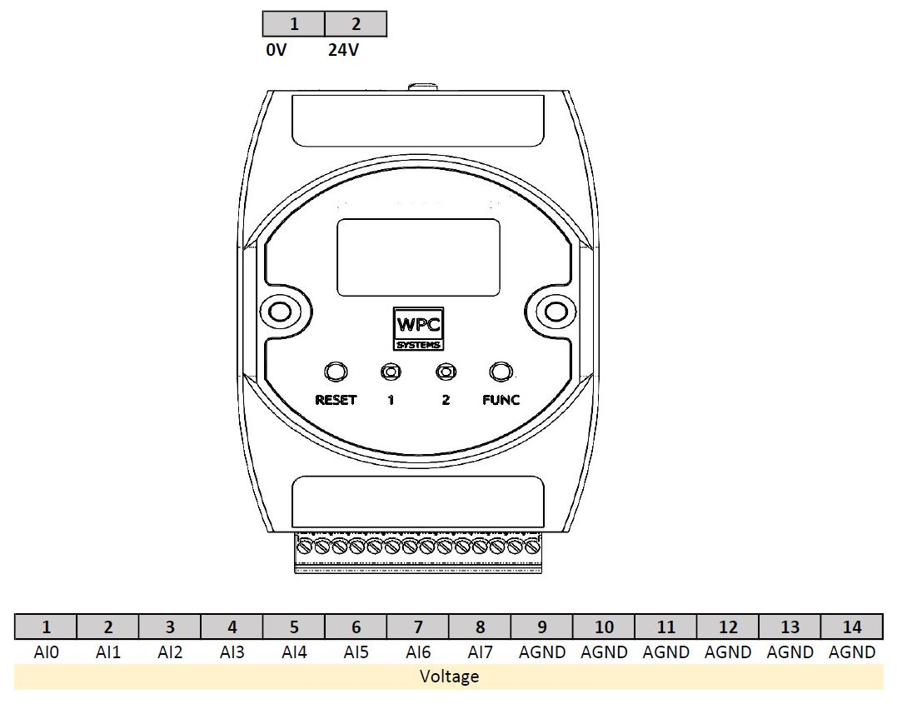

Ethan-A
Device pinout
{kind=link}
API function description
- class pywpc.EthanA
This device WPC-Ethan-A has 8ch simultaneous voltage input. Max sampling rate is 20KHz.
- Available ports:
AI : 0
Methods
Clear AI buffer counter of remote device.
AI_close_async(port)Close AI port on WPC DAQ device.
Get AI port.
AI_open_async(port)Open AI port on WPC DAQ device.
Get AI buffer status of remote device.
AI_readOnDemand_async(port)Read one sample from AI port.
AI_readStreaming_async(port, num_of_samples)Read multiple samples from AI port.
AI_setMode_async(port, mode)Configure acquisition mode setting.
AI_setNumSamples_async(port, sample_points)Configure sample points to acquisition for N-samples mode.
AI_setSamplingRate_async(port, sampling_rate)Configure sampling rate to acquisition for N-samples and continuous mode.
AI_start_async(port)Start N samples or continuous AI acquisition.
AI_stop_async(port)Stop N samples or continuous AI acquisition.
Get device firmware information.
Get geteway from the connected web device.
Get IP address and subnet mask from the connected web device.
Get MAC address from the connected web device.
Get pin mode in specific port.
Get date and time to connected WPC device.
Get serial number from the connected WPC device.
Reboot on bootloader from the connected WPC device.
Reboot from the connected WPC device.
Sys_setIPAddrAndSubmask_async(ip_addr[, ...])Set IP address and subnet mask to the connected web device.
Sys_setRTC_async(year, month, day, hour, ...)Set date and time to connected WPC device.
close()Close web device handle.
connect(IP[, port, verbose])Connect to web device.
disconnect([verbose])Disconnect web device.
- async AI_clearBufferStatus_async(port)
Clear AI buffer counter of remote device.
- Parameters
- portint
Available port number depends on WPC DAQ device.
- Returns
- statusint
0 if success, error otherwise.
- async AI_close_async(port)
Close AI port on WPC DAQ device.
- Parameters
- portint
Available port number depends on WPC DAQ device.
- Returns
- statusint
0 if success, error otherwise.
- AI_getPort()
Get AI port.
- Returns
- portlist
AI port.
- async AI_open_async(port)
Open AI port on WPC DAQ device.
- Parameters
- portint
Available port number depends on WPC DAQ device.
- Returns
- statusint
0 if success, error otherwise.
- async AI_readBufferStatus_async(port)
Get AI buffer status of remote device.
- Parameters
- portint
Available port number depends on WPC DAQ device.
- Returns
- buffer_statuslist of 4 positive int.
buffer_status[0]: buffer zero timesbuffer_status[1]: buffer full timesbuffer_status[2]: buffer remainbuffer_status[3]: buffer max values
- async AI_readOnDemand_async(port)
Read one sample from AI port. This is use in “on demand” mode.
- Parameters
- portint
Available port number depends on WPC DAQ device.
- Returns
- samplelist of float.
List of values measured from channels.
- async AI_readStreaming_async(port, num_of_samples, delay=0.005)
Read multiple samples from AI port.
- Parameters
- portint
Available port number depends on WPC DAQ device.
- get_data_timesint
Amount of data to get from the function call.
- delayfloat:
Time delay (second) before getting data.
- Returns
- sample_listlist of list of float.
AI data where each element of
sample_listis a sample.A sample is a list of values measured from different channels.
- async AI_setMode_async(port, mode)
Configure acquisition mode setting.
- Parameters
- portint
Available port number depends on WPC DAQ device.
- modeint
0 : on demand, 1 : N-samples, 2 : continuous.
- Returns
- statusint
0 if success, error otherwise.
- async AI_setNumSamples_async(port, sample_points)
Configure sample points to acquisition for N-samples mode.
- Parameters
- portint
Available port number depends on WPC DAQ device.
- sample_pointsint
Number of sample points.
- Returns
- statusint
0 if success, error otherwise.
- async AI_setSamplingRate_async(port, sampling_rate)
Configure sampling rate to acquisition for N-samples and continuous mode.
- Parameters
- portint
Available port number depends on WPC DAQ device.
- sampling_rateint or float
AI sampling rate.
- Returns
- statusint
0 if success, error otherwise.
- async AI_start_async(port)
Start N samples or continuous AI acquisition.
- Parameters
- portint
Available port number depends on WPC DAQ device.
- Returns
- statusint
0 if success, error otherwise.
- async AI_stop_async(port)
Stop N samples or continuous AI acquisition.
- Parameters
- portint
Available port number depends on WPC DAQ device.
- Returns
- statusint
0 if success, error otherwise.
- async Sys_getDriverInfo_async()
Get device firmware information.
- Returns
- driver_infolist of three string
driver_info[0]: Model name.driver_info[1]: Mode.driver_info[2]: Firmware version.
- async Sys_getGateway_async()
Get geteway from the connected web device.
- Returns
- gatewaystr of 4 int separated by period.
Network gateway.
- async Sys_getIPAddrAndSubmask_async()
Get IP address and subnet mask from the connected web device.
- Returns
- network_infolist of 2 str.
network_info[0]: IP addressnetwork_info[1]: subnet mask
- async Sys_getMACAddr_async()
Get MAC address from the connected web device.
- Returns
- mac_addrstr of 6 int separated by colon.
MAC address.
- async Sys_getPinModeInPort_async(port)
Get pin mode in specific port.
- Parameters
- portint
Available port number depends on WPC DAQ device.
- Returns
- pinsint
How many pins in specific port.
- pin_modelist of 8 string
[pin0, pin1 ,……pin7]
pinmode : Disabled, Idle, DI, DO, UART, I2C, SPI, CAN, PWM and ADC.
- async Sys_getRTC_async()
Get date and time to connected WPC device.
- Returns
- str_str
- Date and time represented by “A-B-C, D:E:F”.
“A” is year.
“B” is month.
“C” is day.
“D” is hour.
“E” is minute.
“F” is second.
- async Sys_getSerialNumber_async()
Get serial number from the connected WPC device.
- Returns
- str_str
Serial number represented by string of 8 characters.
- async Sys_rebootOnBootloader_async()
Reboot on bootloader from the connected WPC device.
- Returns
- statusint
0 if success, error otherwise.
- async Sys_reboot_async()
Reboot from the connected WPC device.
- Returns
- statusint
0 if success, error otherwise.
- async Sys_setIPAddrAndSubmask_async(ip_addr, subnet_mask='255.255.255.0')
Set IP address and subnet mask to the connected web device.
- Parameters
- ip_addrstr of 4 int separated by period.
IP network address.
- subnet_maskstr of 4 int separated by period.
Subnet mask. (default: “255.255.255.0”)
- Returns
- statusint
0 if success, error otherwise.
- async Sys_setRTC_async(year, month, day, hour, minute, second)
Set date and time to connected WPC device.
- Parameters
- yearint
year (CE).
- monthint
month (1~12).
- dayint
day (1~31).
- hourint
hour (24-hour clock) (0~23).
- minuteint
minute (0~59).
- secondint
second (0~59).
- Returns
- statusint
0 : Success, Others : Error.
- close()
Close web device handle.
- Returns
- statusint
0 if success, error otherwise.
- connect(IP, port=7, verbose=True)
Connect to web device.
- Parameters
- IPstr of 4 int separated by period.
IP network address.
- Returns
- statusint
0 if success, error otherwise.
- disconnect(verbose=True)
Disconnect web device.
- Returns
- statusint
0 if success, error otherwise.